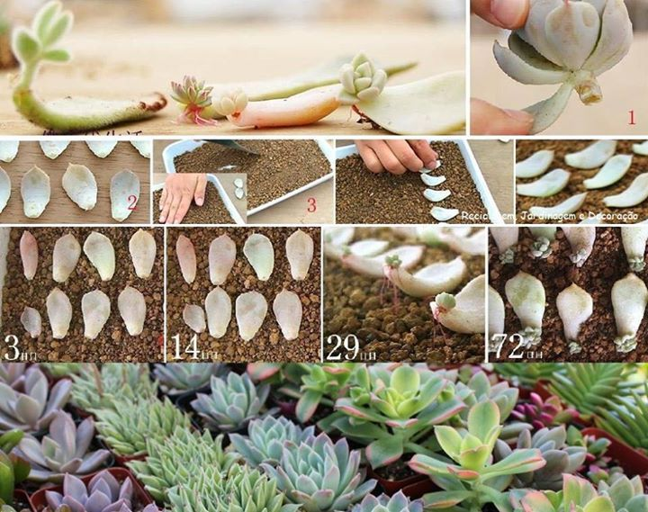
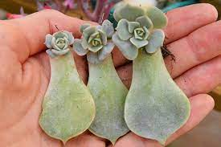

METODOS DE MULTIPLICACION Y REPRODUCCION
-Por esqueje o gajos de tallo: el esqueje es una
parte viva de la planta que se extrae por medio
de un corte. Se consideran esquejes o gajos
aquellas porciones de la planta que en
condiciones adecuadas regeneran un
nuevo ejemplar.

-Por esqueje de hoja: la reproducción por hoja es el método más sencillo y común que existe. Algunas
especies fáciles de multiplicar por este método son
echeverias, sedums, graptopetalums y pachyphytums.
Para lograrlo necesitas sacar varias hojas de la planta
madre. Se recomienda que elijas hojas bien carnosas,
dejando la roseta inicial intacta. Una vez que hayas
extraído las hojas haciendo un corte limpio, déjalas en
un lugar seco con buena iluminación sobre una bandeja
para que cicatricen.

-Por hijuelos: hay algunas suculentas por ejemplo los Agaves, Aloes, Haworthia, Echeverias y los Kalanchoes a los que les nacen hijuelos de la base. Estos hijuelos se pueden separar una vez estén bien desarrollados. Es muy probable que si están cerca del sustrato ya tengan raíces. Al tener raíz se pueden sembrar y regar de inmediato. Si no tienen raíz seguir el mismo

-Por división de mata: Este tipo de multiplicación consiste en dividir la planta en la base en dos o más trozos. Cada trozo con una buena porción de raíz. Luego deberás sembrar cada planta por separado.

REPRODUCCION DE CACTUS POR SEMILLAS
1.Realiza 4 agujeros pequeños por debajo del recipiente de plástico.
2. Coloca el sustrato en el recipiente, esparce las semillas sobre superficie sin cubrirlas y tapa el recipiente.
3.Riega por inmersión en aproximadamente 2cm de agua hasta llegar a humedecer el sustrato.
4.Ubica el semillero en un lugar con mucha luz, pero protegido del sol directo.
5. Conviene ventilar el envase periódicamente retirando la tapa por unos minutos y luego volver a tapar.
6. Regar cuando el sustrato se vea seco por inmersión.
7. Cuando los brotes estén más desarrollados puedes dejar el envase ventilado todo el tiempo
8. Al año trasplantar durante épocas cálidas.